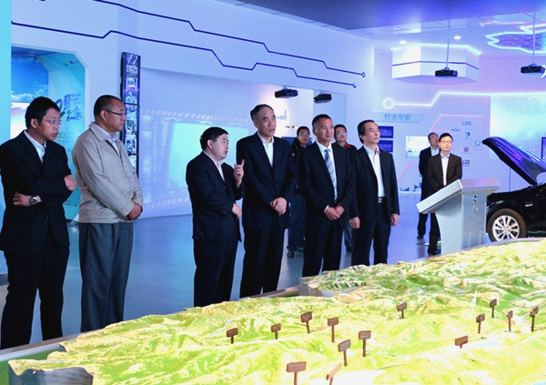
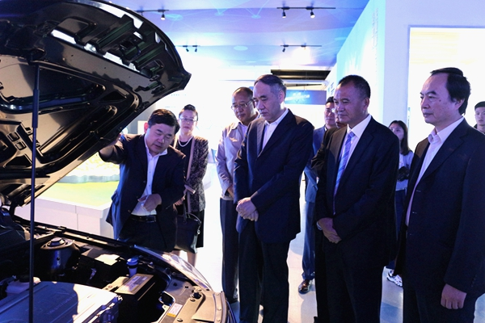

9月3日上午，全国政协副主席、民建中央常务副主席辜胜阻、民建中央组织部副部长李维平、民建中央组织部副调研员赵洪涛，在青海省政协副主席马海瑛、民建青海省委主委王舰、民建青海省委驻会副主委王建民等领导的陪同下莅临青海泰丰先行锂能科技有限公司视察调研，并与公司董事长高力进行了交流座谈。

辜主席一行首先参观了西宁市青海锂产业展览馆，详细了解青海盐湖锂资源分布、盐湖提锂、隔膜材料、正极材料等产业情况及行业专家情况。高力董事长就公司经营情况、产品品种、经营战略目标、企业销售状况、人才的培养、自主创新、研发运用、存在问题及未来发展战略作了详细汇报。
辜主席一行参观展览馆后，与公司领导在展馆二楼召开座谈会。会上，辜主席一行观看了环青海湖（国际）电动汽车挑战赛宣传片。随后，高力董事长介绍了环青海湖（国际）电动汽车挑战赛作为青洽会的主要活动，自2014年至今已成功举办五届。作为世界首创海拔最高的电动汽车赛事，是中国新能源汽车发展成果的集中巡演。环青海湖（国际）电动汽车挑战赛和锂产业国际高峰论坛等一系列活动突出了“绿色、节能、环保”主题，全面展示青海省锂资源的开发优势，通过丰富的赛事传播内容与角度，加大环保科技、文化艺术引领时尚生活的推广力度，进一步提升了赛事影响力和国际化水平，未来环青海湖（国际）电动汽车挑战赛将打造成为在国内外领先的新能源汽车政策研讨、学术交流、技术评测、产品体验与发布的行业综合展示平台。

自环青海湖（国际）电动汽车挑战赛2014年创办以来，民建青海省委作为历届赛事支持单位，积极组织所属企业参与协办，民建青海省委机关工作人员全过程参与赛事筹备运营系列活动。时任全国政协副主席、民建中央常务副主席马培华、时任青海省副省长、民建青海省委主委高云龙、民建青海省委主委王舰、民建青海省委副主委王建民等民建领导均亲临赛事及论坛现场考察指导，给予赛事高度肯定与支持！
辜主席听完高力董事长汇报后，对公司所取得的成绩以及举办环青海湖（国际）电动汽车挑战赛给予肯定，并对公司的发展寄予厚望。他指出，青海的资源与整个新型产业连接在一起，新型产业需要逐步来认识，希望公司继续发挥高新技术企业优势，进一步把产业做大做强，对举办环青海湖（国际）电动汽车挑战赛一定会给予大力支持。
最后，高力董事长热情邀请辜主席参加将于明年举办的第六届环青海湖（国际）电动汽车挑战赛，恳请中国民主建国会作为2019年赛事联合主办单位，将该赛事列入民建中央2019年度重大活动，成立赛事专项小组，由专人负责对接指导工作，以利于民建更加密切深入地参与“环青海湖（国际）电动汽车挑战赛”与“锂产业国际高峰论坛”的整合运作 。相信在民建中央的支持与指导下，2019年的环青海湖（国际）电动汽车挑战赛必将进一步提升赛事影响力和国际化水平,成为在国内外领先的新能源汽车政策研讨、学术交流、技术评测、产品体验与发布的行业综合展示平台。